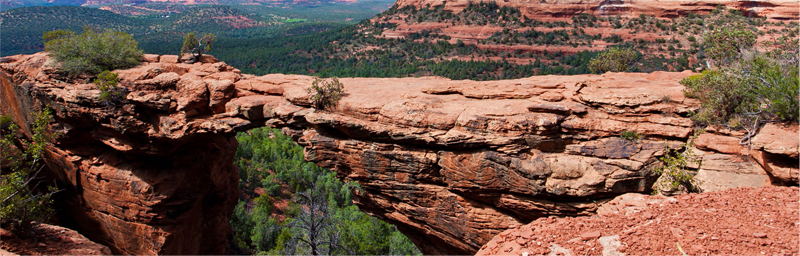

Седона – небольшой городок в Аризоне, заслуживающий большего!
Рассмотрим 5 причин, по которым Седона круче, чем Гранд Каньон.
Настоящий городок
-№1-
Седона –не аттракцион для туристов, там течет своя жизнь

-
Жилье
Рекомендуем пожить в настоящем мотеле, все как в кино!
-
Еда
Всегда заказывайте фирменный бургер, вы не разочаруетесь!
-
Сувениры
Не только китайского, но и местного производства!
Там есть
мост дьявола
-№2-
Да, по нему можно пройтись! если конечно вы осмелитесь
-
Небольшая площадь
-№3-
Все достопримечательности находятся очень близко
-
Красивая дорога
-№4-
Ехать в Седону из Лас-Вегаса совсем не скучно
-
Мало туристов
-№5-
Большинство едет в Гранд-Каньон и толпится там
Заинтересовались?
Укажите предполагаемые даты поездки,
и мы покажем вам лучшие предложения гостиниц в Седоне